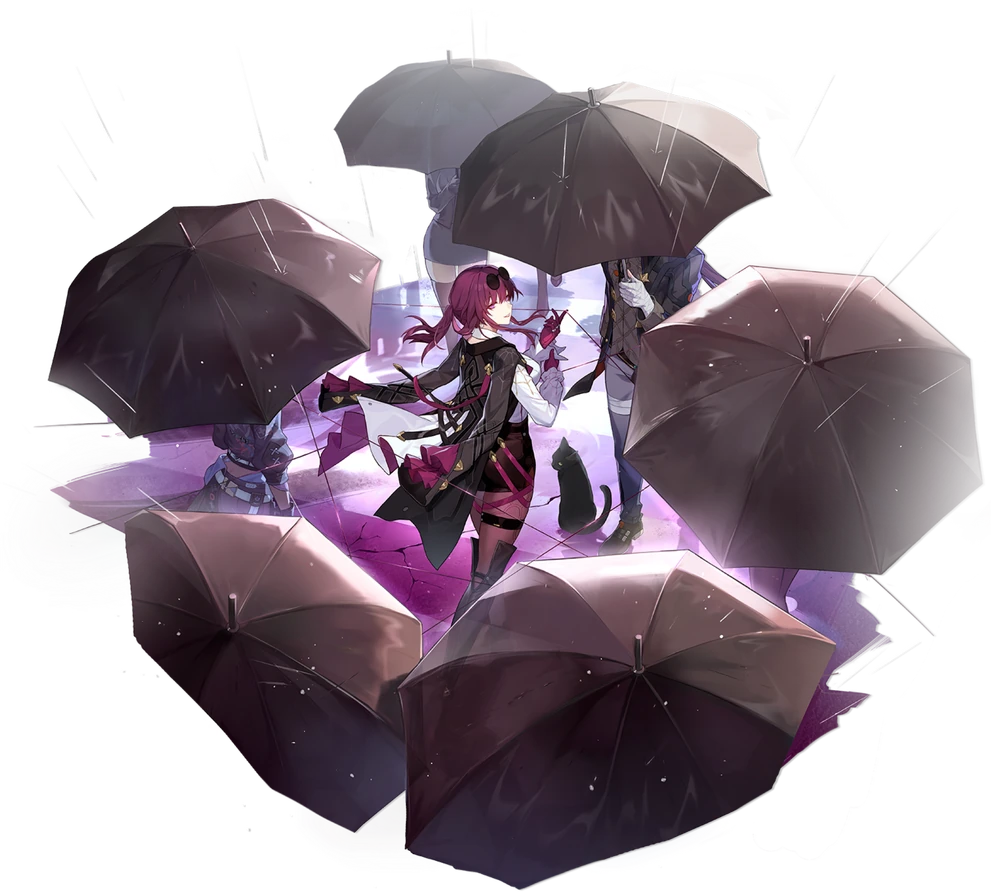

О игре
Honkai: Star Rail — это новая игра во вселенной Honkai, которая сочетает в себе элементы ролевой игры и стратегических боев. Путешествуйте по различным мирам и исследуйте захватывающие истории!

Особенности
- Уникальные персонажи с индивидуальными способностями
- Захватывающий сюжет и богатый мир для исследования
- Стратегические бои в пошаговом режиме
- Многопользовательский режим и кооперативные миссии
Скачать игру
Присоединяйтесь к приключениям в Honkai: Star Rail! Скачайте игру на вашу платформу:
Легендарные персонажи
Кафка
В перечне лиц, разыскиваемых Корпорацией межзвёздного мира, в записи о Кафке указаны лишь её имя и одна фраза: «Коллекционирует накидки». Об этой Охотнице за Стеллароном мало что известно, кроме того, что она является одним из самых доверенных лиц Раба судьбы Элио. Кафка делает всё возможное ради воплощения в жизнь будущего, о котором так мечтает Элио.
Март 7
Энергичная и эксцентричная девушка, интересующаяся всем, что нравится девочкам её возраста, к примеру, фотографией. Её обнаружили в глыбе дрейфующего вечного льда, а после пробуждения оказалось, что она ничего не знает ни о себе, ни о своём прошлом. Поначалу сильно этим подавленная, она решила назвать себя в честь даты, с которой пошла её новая жизнь. И так появилась Март 7.
Контакты
Следите за нами в социальных сетях: